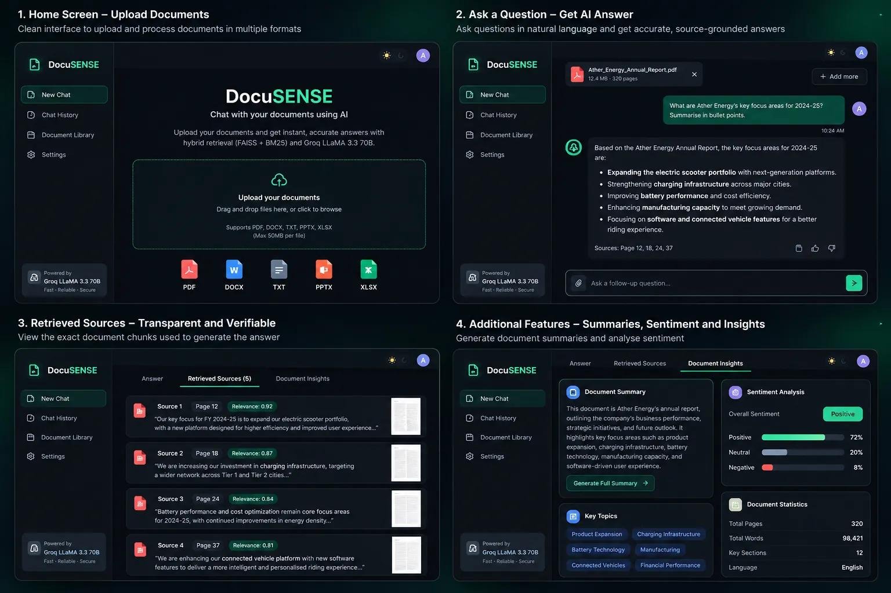

Original Unaltered ScreenshotsDocuSENSE four-screen interface concept · image shown as supplied
DocuSENSE
Ask questions across uploaded documents.
A Streamlit document Q&A app using retrieval-augmented generation (RAG). It combines FAISS semantic search with BM25 keyword matching, fuses ranked results with Reciprocal Rank Fusion, and reranks candidates with a CrossEncoder before the LLM responds.
35% improvement in answer relevance over single-retrieval baselines, as reported in my résumé.